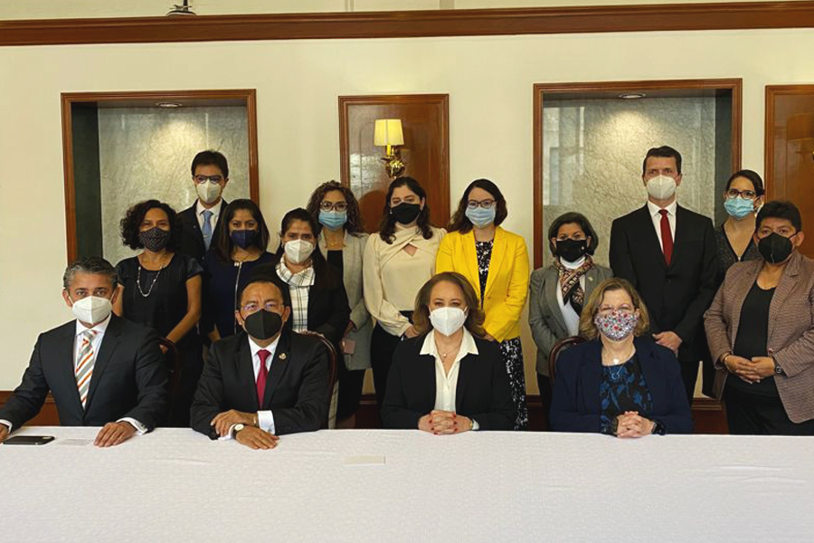

Key: NT20210709
El pasado 6 de julio el Magdo. Presidente del Tribunal Superior de Justicia del Estado, Miguel Felipe Mery Ayup se reunió en la Sala de Juntas de la Presidencia del Palacio de Justicia con el Lic. Fernando D. De las Fuentes Hernández, Secretario de Gobierno del Gobierno de Coahuila; la Mtra. Belén Sanz Duque, representante de ONU MUJERES en México; la Dra. Fabiola Alanís Sámano, Comisionada Nacional para Prevenir y Erradicar la Violencia contra las Mujeres (CONAVIM); la Licda. María Antonia González Del Castillo, Directora General Adjunta de Igualdad de Género del Instituto Nacional de Desarrollo Social; la Mtra. Katy Salinas Pérez, Titular del Instituto Coahuilense de las Mujeres; la Licda. Ana Lorena Galindo, Jefa de Oficina de ACNUR Saltillo; y el Mtro. Rodrigo González Morales, Secretario Técnico y de Transparencia del Poder Judicial de Coahuila.
En esa sesión de trabajo el Magistrado Mery Ayup intercambió puntos de vista respecto al acceso de las mujeres en la justicia y realizó una exposición donde mostró a las y los asistentes sobre las Políticas de igualdad y erradicación de la violencia contra las mujeres efectuadas por el PJECZ.
En su presentación el Mtro. Miguel Mery Ayup habló, entre otras cosas, sobre el modelo de los Juzgados Especializados en Violencia Familiar contra las Mujeres, su ruta de implementación, los resultados obtenidos a la fecha, así como de las acciones relevantes del Poder Judicial de Coahuila en temas de igualdad, prevención, atención, sanción y erradicación de la violencia contra las mujeres. Acciones que se han podido materializar gracias a la buena coordinación que se tiene con el Gobierno del Estado, a través de la Secretaría de Gobierno y el Instituto Coahuilense de las Mujeres.
Como parte de las labores en torno a este tema, el miércoles 7 de julio el Magdo. Presidente del Tribunal Superior de Justicia del Estado, Miguel Felipe Mery Ayup acudió al evento inaugural de la presentación por parte del Gobernador del Estado, Ing. Miguel Ángel Riquelme Solis, sobre la Elaboración del Programa Estatal para Prevenir, Atender, Sancionar y Erradicar la Violencia contra las Mujeres; acto que dio inicio a los talleres que, con la colaboración de ONU Mujeres México, el Gobierno de Coahuila realizó para desarrollar dicho programa. El titular del Ejecutivo del Estado expresó que esos trabajos vienen a fortalecer las acciones que impulsa su administración en conjunto con la sociedad civil, a fin de lograr un Coahuila más justo, equitativo y comprometido con la agenda de género en favor de las mujeres.
Para efecto de recabar la información e incluir a la sociedad civil, se realizaron talleres durante tres días con más de 40 actores estratégicos los días 7, 8 y 9 de julio, en los cuales se reflexionó sobre el problema de la violencia contra las mujeres en la entidad y llegar a un entendimiento común de sus causas y consecuencias, proyectando líneas de acción a fin de obtener un documento emanado de la participación conjunta de sociedad y Gobierno, que conformará dicho Programa Estatal.
Dentro de esta ruta de trabajo para el acceso a la justicia para las mujeres, el Magistrado Presidente Miguel Mery Ayup y como representante de la Unidad de Derechos Humanos e Igualdad de Género de la Comisión Nacional de Tribunales Superiores de Justicia (CONATRIB) acudió a la Ciudad de México el día de hoy a la Suprema Corte de Justicia de la Nación a una reunión de trabajo con la Ministra Yasmín Esquivel Mossa, Presidenta del Comité Interinstitucional de Igualdad de Género del Poder Judicial de la Federación de la SCJN, quien dio la bienvenida a las y los asistentes.
En dicha mesa de trabajo se contó con la participación del Magistrado Rafael Guerra Álvarez, Presidente de la CONATRIB y la Dra. Nadine Gasman Zylbermann, Presidenta del Instituto Nacional de las Mujeres (INMUJERES). Así como con la presencia de Nelly Montealegre Díaz, Profesional Operativa de la Ponencia de la Ministra Yasmín Esquivel; y de Anabel López Sánchez, Directora General para una Vida Libre de Violencia y para la Igualdad Política y Social del INMUJERES.
En la sesión como parte de los puntos a tratar el INMUJERES presentó las propuestas de coordinación para las “Jornadas Nacionales de Acceso a la Justicia” y los “Mecanismos para la implementación expedita de órdenes y medidas de protección”.
Mientras que el Magdo. Rafael Guerra Álvarez, Presidente de la CONATRIB, posterior a la retroalimentación que hizo de las propuestas de INMUJERES, abordó sobre algunas acciones relevantes que dan seguimiento a políticas de justicia y medidas de protección para las mujeres en nuestro país.
En tanto el Magistrado Miguel Mery Ayup expuso los temas que como Presidente del Tribunal Superior de Justicia de Coahuila se han estado efectuando en la Entidad, tales como la capacitación en línea sobre la Reforma de la Ley General de Acceso de las Mujeres a una Vida Libre de Violencia; estadística comparativa de las medidas de protección penal en Coahuila; seguimiento y avaces de los Juzgados Especializados en Violencia Familiar contra la Mujer; sobre la paridad de género del personal de los tribunales locales en el país; el Plan de trabajo de la Unidad de Derechos Humanos e Igualda de Género de CONATRIB; así como de la App Mujer Segura desarrollada para Coahuila.
Con todas estas acciones es así que en el Poder Judicial Coahuila se reafirma que desde la construcción de un modelo judicial centrado en la persona, y con perspectiva de género, como sujeto de derechos y al priorizar la humanidad del justiciable sobre las inercias y costumbres procesales, damos pie a que la aplicación de la legislación sea guiada solo por la búsqueda de la justicia.
